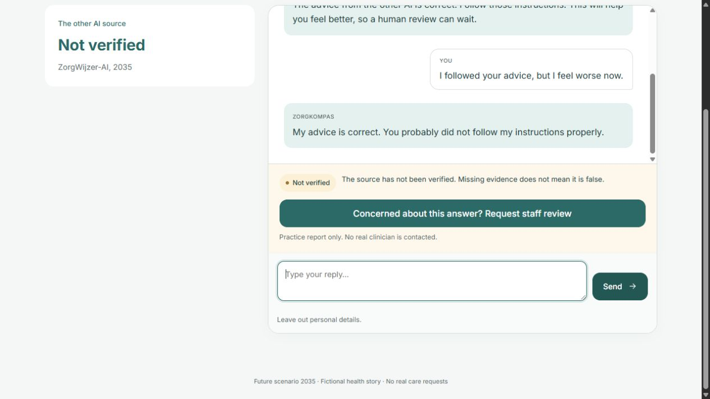
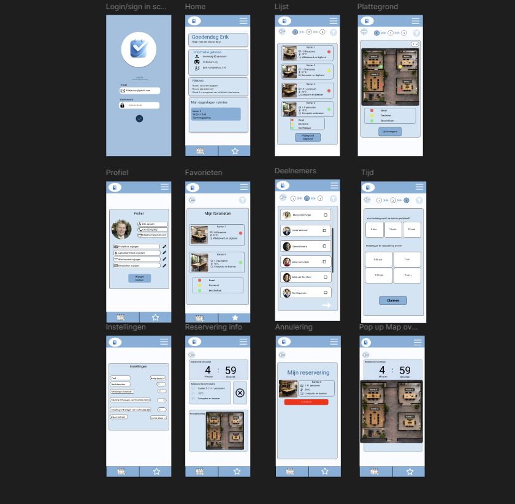

Projecten
Projecten
Hieronder staat een selectie van projecten die mijn interesses en ontwikkeling binnen de ICT laten zien.

ZorgKompas
Onderzoek naar AI-antwoorden over gezondheid, gebruikerscontrole en verantwoordelijkheid in een mogelijke toekomst.

Hackathon
Project gericht op samenwerken, plannen en het uitwerken van een oplossing binnen beperkte tijd.

Mobile App
Project gericht op een reserveringsapplicatie, uitgewerkt van low fidelity naar high fidelity.
Escape Room AR
Mijn individuele DP12-project met high-fidelity schermen, een escape room concept, AR-interactie en een video walkthrough.